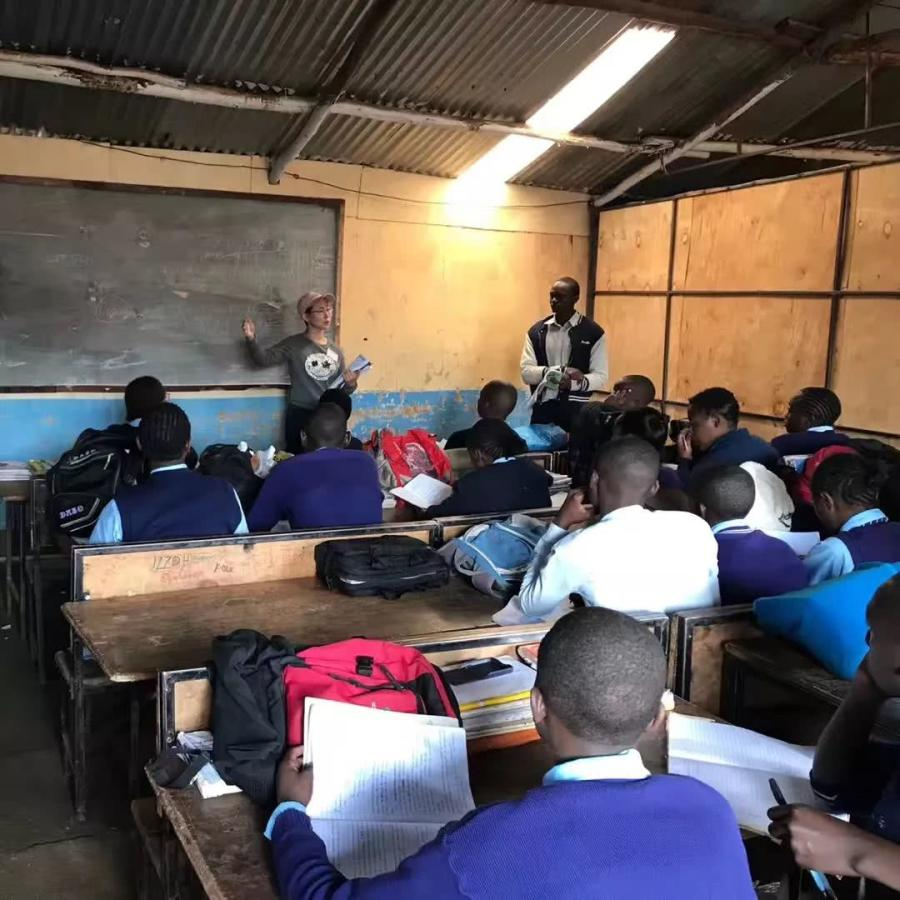
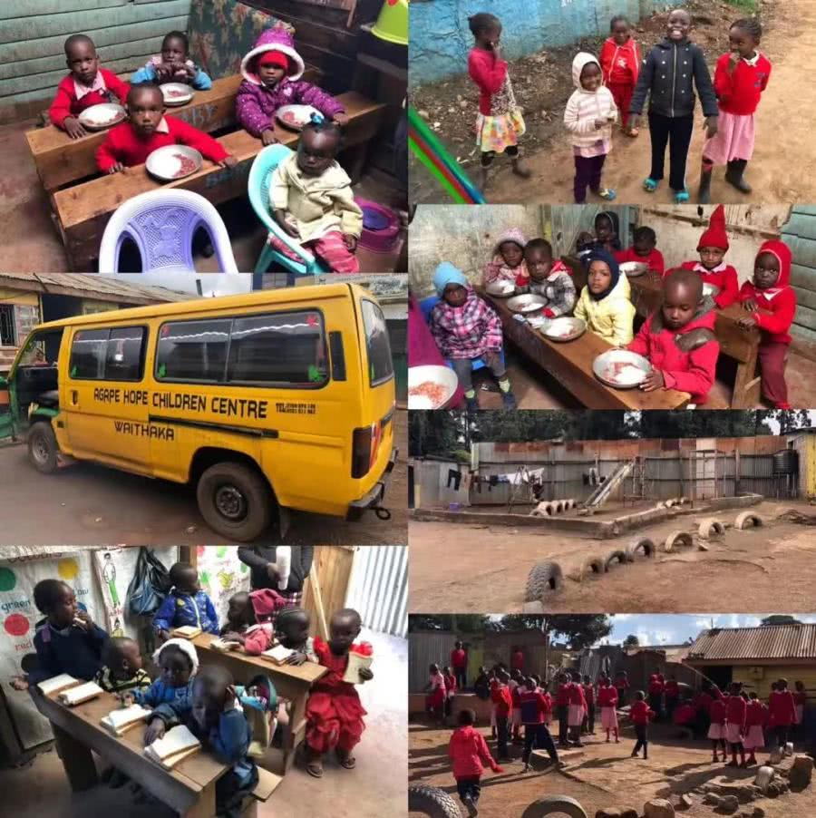
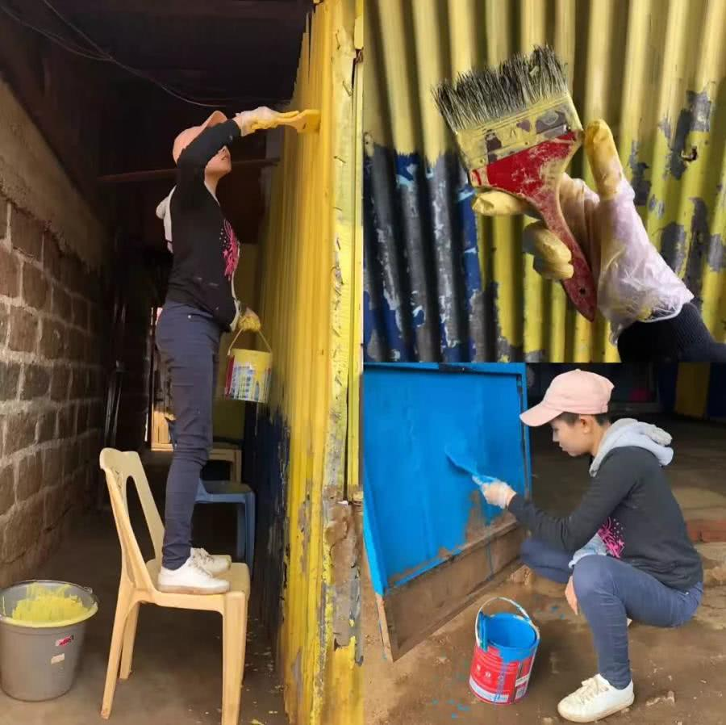
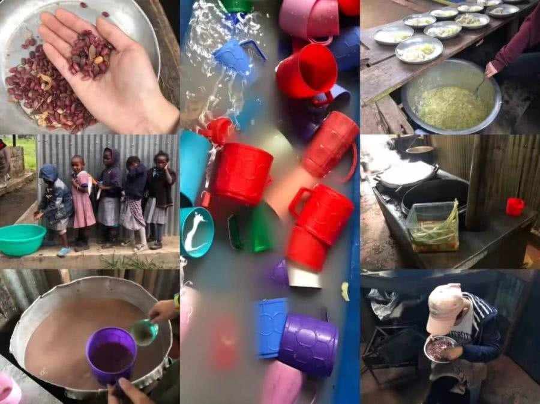

Self-giving,consecratory,lucky...
Beijing girl mei qing participates in the volunteer activity, it is the deep experience. Here is how she felt when she joined the IVHQ Children Care program in Kenya in June 2018.
We teach them 123 wooden heads and hawks to catch chickens. The children are very energetic and tired. The kids love cell phones, and whenever I get a message back or something, they like to surround themselves. They like to see the world through my mobile phone, and they also like to take photos with me. The children are mainly eating soy products, which are not nutritious, but they have no choice.
Some children are very outgoing, some are shy, and they like our foreigners' soft hair very much. I worked hard to get used to them, including dining and living with them, but I was careful while drinking water.
Each of them longed for a warm and normal home, because I could see the envy in their eyes when I mentioned my father and my mother. They're all christians, and I don't believe that, but it's not necessarily a good thing for them, it's probably a psychological thing.
The children loved playing games with me, some had shoes, some had bare feet, some wore slippers, and it was easy to wrestle when running. Such a big child, fall into such, I have seen in the country, in the strong will cry, there is nothing here, I think it is probably the domestic children cry has the parents comfort, and this cry is useless.
The classroom was dark, damp, unlit and crowded. The children's yard was dirty and simple, but the sun beat warm on them. Long rope is plastic pipe/wire pipe material, can also play. The school bus at the orphanage was on the broken road, and I felt every part tremble.
When I finally said goodbye to the children, there was a child who took me by the hand and asked me to give them a message of blessing. It occurred to me that my high school history teacher, who said "Good students, I have no more to teach. Iwish you all the best in the future."
My good students, I have nothing more to teach you. Wish you a bright future and great future. "Now I send this to the children at the orphanage: "I wish you all the best in the future."But I think now this sentence should be translated as "I wish you peace and joy, not pain... "